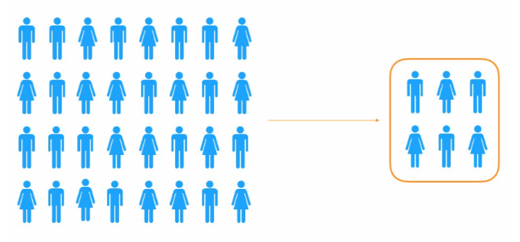
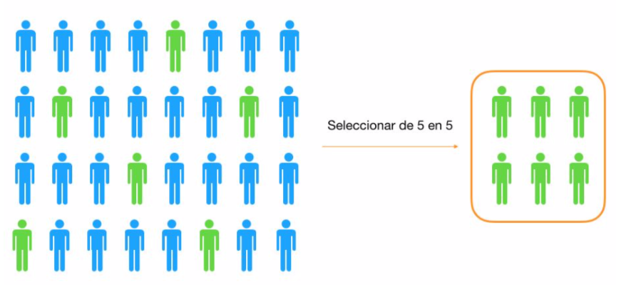
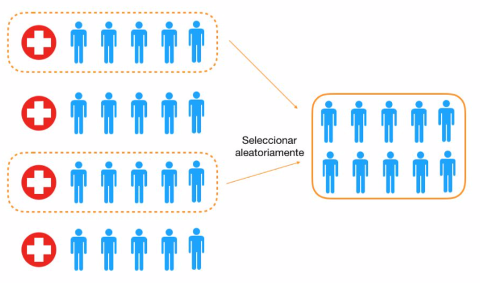

4.2 Métodos de muestreo
Para conocer características de una población, lo ideal es estudiar toda la población. Sin embargo, en la mayoría de los casos, su excesivo tamaño, el coste que supondría o la imposibilidad de acceder a todos los individuos de la población, hacen necesario el estudio de esas características en muestras extraídas de dicha población.
Si estudiamos toda la población, el estudio se llama censo y los valores obtenidos son parámetros de la población. Si estudiamos una muestra, estamos realizando un estudio estadístico y los valores obtenidos son medidas estadísticas.
Para que los resultados obtenidos a partir de un estudio estadístico se puedan aplicar de forma veraz a toda la población, la muestra extraída debe ser representativa de la población. El muestreo es el conjunto de técnicas que se aplican para extraer muestras representativas de la población.
Un muestreo es aleatorio cuando todos los elementos tienen la misma probabilidad de ser seleccionados como elementos de la muestra
Un muestreo es no aleatorio cuando los elementos que van a ser incluidos en la muestra no tienen la misma probabilidad de ser seleccionados
Hay que advertir claramente que, generalmente, la obtención de la muestra aleatoria en la población es casi utópica y que debemos conformarnos con analizar los datos de los que disponemos, siempre y cuando podamos descartar un claro sesgo o intencionalidad a la hora de incluirlos en el estudio. Si es así, la muestra puede considerarse, si no aleatoria, al menos arbitraria, lo cual puede ser suficiente si no sobrevaloramos los métodos que vamos a aplicar.
Al extraer información de una muestra e inferirla sobre toda la población, es decir, al generalizar los resultados, se cometen errores que pueden ser debidos a la elección de la muestra. Si el muestreo es aleatorio, el error se puede minimizar aumentando el tamaño de la muestra. Si el muestreo no es aleatorio, el error no se puede corregir y esto se conoce como sesgo.
Decimos que un muestreo aleatorio es con reposición cuando, tras elegir cualquier elemento, éste puede volver a ser elegido. Si cada elemento de la población puede ser escogido una sola vez para la muestra, decimos que el muestreo es sin reposición.
Para extraer una muestra aleatoria de tamaño n de una población de tamaño N mediante un muestreo aleatorio simple:
numeramos los N elementos de la población
elegimos al azar n elementos del total

Para extraer una muestra aleatoria de tamaño n de una población de tamaño N mediante un muestreo aleatorio sistemático:
numeramos de forma aleatoria los elementos de la población
fijamos el tamaño de la muestra que queremos obtener, n, y hallamos el cociente entre el tamaño de la población y el tamaño de la muestra: h = N/n; este valor se llama constante de elevación.
elegimos, al azar, un elemento entre los primeros h elementos y, a partir de él, escogemos de h en h hasta completar los n elementos de la muestra.

Este tipo de muestreo es fácil de aplicar. Sin embargo, hay que tener en cuenta que el criterio para numerar a los elementos de la población no debe tener ninguna relación con la característica que se va a estudiar en la muestra. En caso contrario, la muestra no sería representativa de la población.
Para extraer una muestra aleatoria de tamaño n de una población de tamaño N mediante muestreo por conglomerados:
segmentamos la población en grupos más pequeños llamados conglomerados de forma que los elementos de cada conglomerado son heterogéneos respecto de la característica que se quiere estudiar y los conglomerados son muy parecidos entre sí.
tomamos una muestra aleatoria simple de conglomerados de modo que la muestra estará formada por todos sus elementos o por muestras aleatorias extraídas de ellos.
